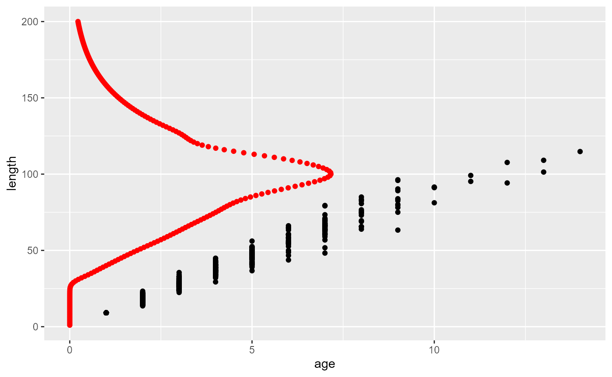
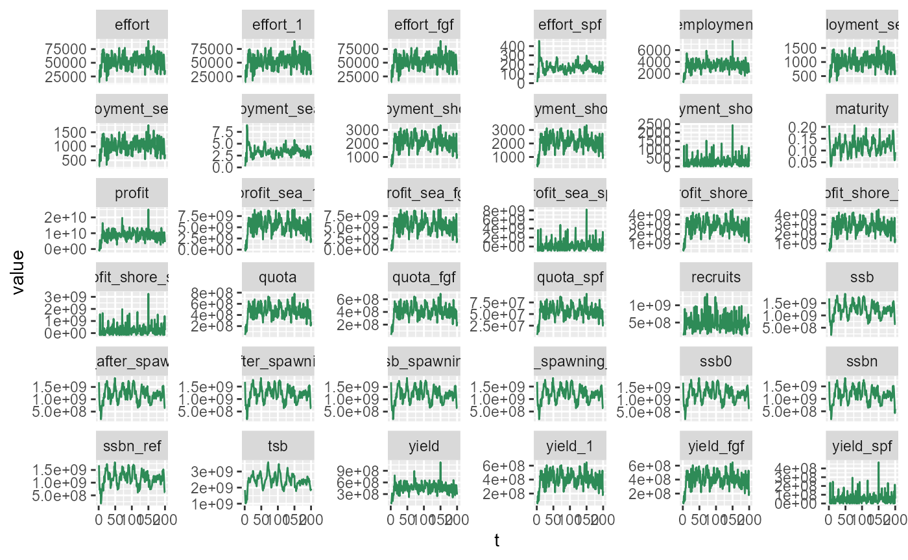
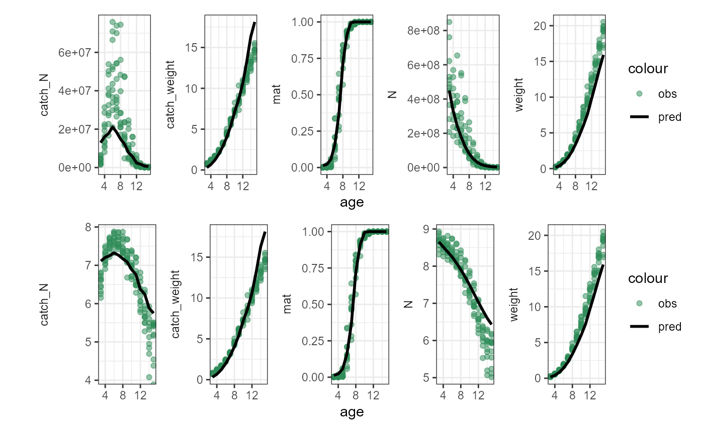
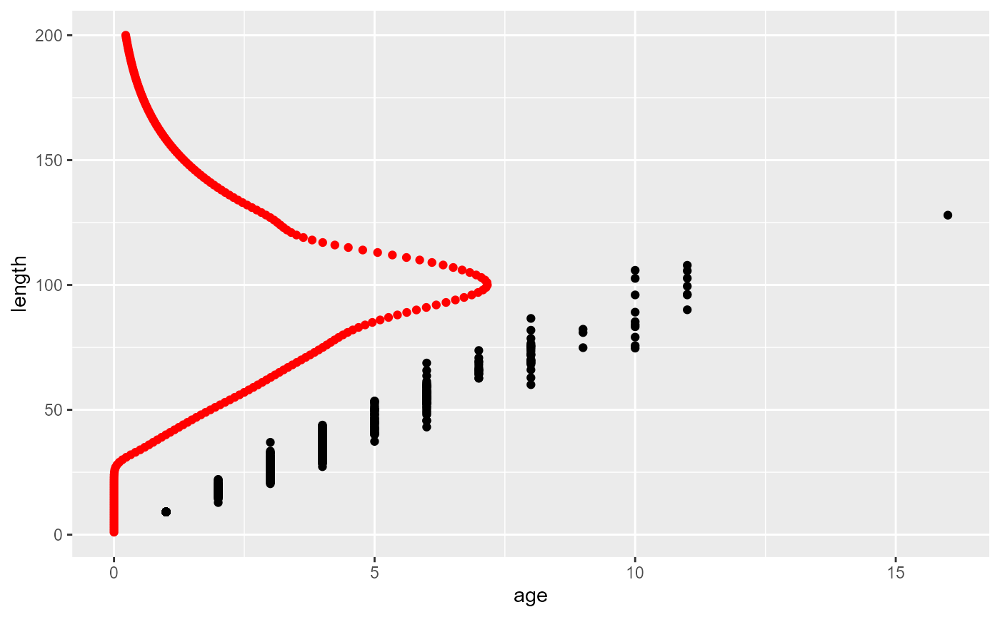
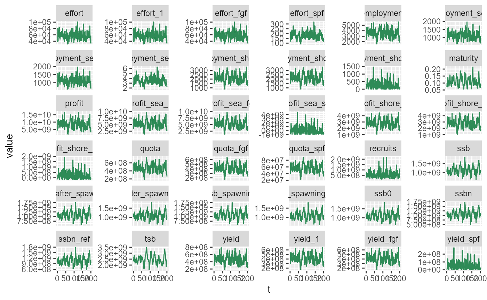
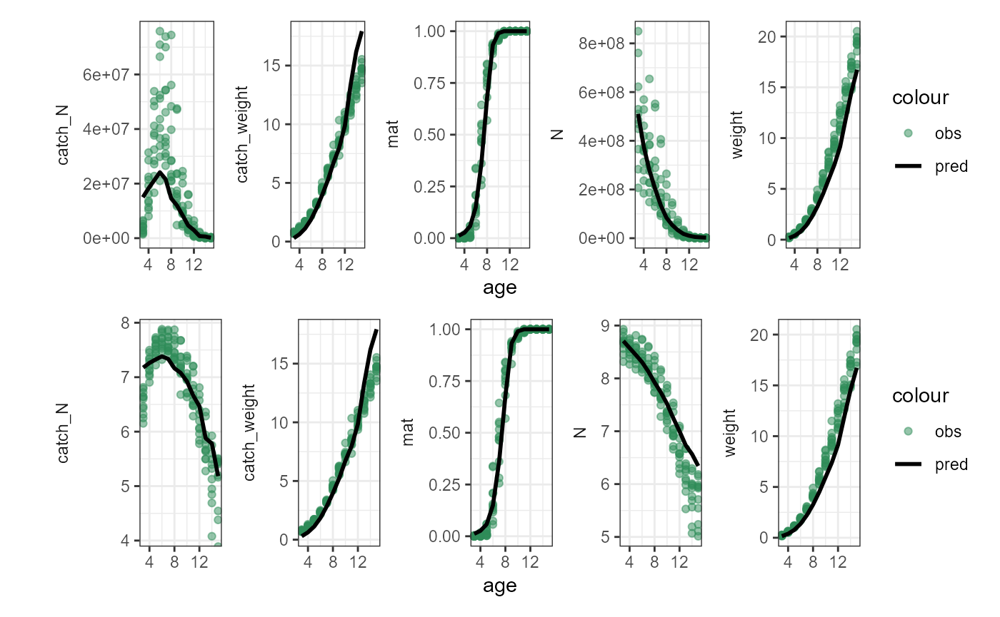

Model calibration: view calibration results
Jaideep Joshi
08 March 2026
plot_calibration.Rmd## ── Attaching core tidyverse packages ──────────────────────── tidyverse 2.0.0 ──
## ✔ dplyr 1.1.4 ✔ readr 2.1.5
## ✔ forcats 1.0.0 ✔ stringr 1.5.1
## ✔ ggplot2 3.5.1 ✔ tibble 3.2.1
## ✔ lubridate 1.9.4 ✔ tidyr 1.3.1
## ✔ purrr 1.0.2
## ── Conflicts ────────────────────────────────────────── tidyverse_conflicts() ──
## ✖ dplyr::filter() masks stats::filter()
## ✖ dplyr::lag() masks stats::lag()
## ℹ Use the conflicted package (<http://conflicted.r-lib.org/>) to force all conflicts to become errors## here() starts at C:/Users/Jaideep/Documents/codes/fisheRyRead Observations Data
datraw = read.csv(here("data/environmental.csv"))
dat = datraw %>% filter(year >= 2010 & year <= 2020)
read_age_dist = function(file){
read.csv(file, header=T) %>%
filter(Year_age >= 2010 & Year_age <= 2020) %>%
pivot_longer(-Year_age) %>%
filter(grepl("X", name)) %>%
mutate(name = strsplit(name, "X")) %>%
unnest_wider(name, names_sep = "_") %>%
rename(age=name_2,
value_obs = value) %>%
mutate(age = as.numeric(ifelse(age == ".gp", yes=15, no=age))) %>%
drop_na() %>%
select(-name_1) %>%
arrange(age)
}Process Age Distribution Data
N_v_age_obs = read_age_dist(here("data/new_calibration_files/Nstock-AFWG2024.csv")) %>%
mutate(value_obs = value_obs*1000) %>% # convert thousands to actual number
rename(N = value_obs)
W_v_age_obs = read_age_dist(here("data/new_calibration_files/Wstock-AFWG2024.csv")) %>%
rename(weight = value_obs)
M_v_age_obs = read_age_dist(here("data/new_calibration_files/ogive-AFWG2024.csv")) %>%
rename(mat = value_obs)
cN_v_age_obs = read_age_dist(here("data/new_calibration_files/Ncatch-AFWG2024.csv")) %>%
mutate(value_obs = value_obs*1000) %>% # convert thousands to actual number
rename(catch_N = value_obs)
cW_v_age_obs = read_age_dist(here("data/new_calibration_files/Wcatch-AFWG2024.csv")) %>%
rename(catch_weight = value_obs)
age_dist_obs = N_v_age_obs %>%
full_join(W_v_age_obs) %>%
full_join(M_v_age_obs) %>%
full_join(cN_v_age_obs) %>%
full_join(cW_v_age_obs)## Joining with `by = join_by(Year_age, age)`
## Joining with `by = join_by(Year_age, age)`
## Joining with `by = join_by(Year_age, age)`
## Joining with `by = join_by(Year_age, age)`Simulate Population
simulate_pop = function(par, nsup = 1e6, verbose=F, nsteps=500, nymax=50, params_file_fish, params_file_fleet, params_file_spf, out_file = "", using_empirical_mort = TRUE){
h = 0.22
lf = 45
fish = new(Fish, params_file_fish)
fish$par$s0 = par["s0"] #0.07
if (length(par) > 1){
if (using_empirical_mort){
fish$natural_mort_scalar = par["nms"] # Can be set from par
fish$setMortalityCurveEmpirical(here::here("data/naturalmort.spline.csv"))
fish$setMortalityParams(0, par["M0"], 0)
} else {
fish$setMortalityParams(par["Mref"], par["M0"], par["b"])
}
}
fleet = new(Fleet)
fleet$readParams(params_file_fleet, FALSE)
fleet$debug = FALSE
cat(">>> Fleet initialized --------------\n")
fishery = new(Fishery, params_file_fish, fish);
fishery$debug = FALSE
cat(">>> Fishery Created --------------\n")
fishery$set_harvestProp(h)
fishery$set_minSizeLimit(lf)
fishery$addFleet(params_file_fleet, FALSE);
fishery$addSpawnerFleet(params_file_spf, FALSE);
fishery$pop$debug = FALSE
cat(">>> Fleet added to fishery --------------\n")
v = fishery$equilibriateNaturalPopulation(5.61, 2e6, 200);
fishery$init(1000, 0, 5.61);
cat(">>> Fishery init with 1000 fish --------------\n")
v2 = fishery$equilibriateWithoutFishing(5.61, 200)
cat(">>> Stock equilibriated --------------\n")
res_ibm <- fishery$simulate(lf, h, nsteps, 1.93e3, 5.61, F, out_file)
cat(">>> Stock Simulated with fishing --------------\n")
res_ibm |>
mutate(t = 1:n()) |>
ggplot(aes(x=t, y=ssb/1e9)) +
geom_line()
list(d=fishery$pop$get_state(), res_ibm=res_ibm)
}Run Simulation and Plot Results with Bioenergetic Natural mort
fmort = read.csv(here::here("data/selection.spline.reduced.csv"))
par_opt = c(s0=0.02924969, Mref=0.03239047, M0=0.17911014, b=1.7)
par_opt_empirical = c(s0=0.01924969, nms=0.2, M0=0.25)
l = simulate_pop(par = par_opt,
params_file_fish = here("params/cod_params.ini"),
params_file_fleet = here("params/fleet_1_params.ini"),
params_file_spf = here("params/fleet_1s_params.ini"),
nsup=1e6,
nsteps=200,
verbose=T,
out_file = here("fishery_output/age_dists_pred.csv"),
using_empirical_mort = FALSE
)## >>> Fleet initialized --------------
## >>> Fishery Created --------------
## >>> Fleet added to fishery --------------
## >>> Fishery init with 1000 fish --------------
## >>> Stock equilibriated --------------
## >>> Stock Simulated with fishing --------------
l$d |>
ggplot(aes(x=age, y=length)) +
geom_point() +
geom_point(data=fmort, aes(x=F*10, y=length), col="red")
pt <- l$res_ibm |>
mutate(t=1:n()) |>
pivot_longer(-t) |>
ggplot(aes(x=t, y=value)) +
geom_line(col="seagreen") +
facet_wrap(~name, scales="free_y")
print(pt)
## Rows: 6400 Columns: 7
## ── Column specification ────────────────────────────────────────────────────────
## Delimiter: ","
## dbl (7): Year, age, N, weight, mat, catch_N, catch_weight
##
## ℹ Use `spec()` to retrieve the full column specification for this data.
## ℹ Specify the column types or set `show_col_types = FALSE` to quiet this message.
pa = age_dists_pred %>% filter(Year > max(Year)-50) %>%
pivot_longer(-c(age, Year)) %>%
filter(case_when(
(name == "N" | name == "catch_N") ~ value > -Inf,
.default = value > 0
)) %>%
filter(age > 0 & age < 20) %>%
group_by(age, name) %>%
summarize(value = mean(value)) %>%
pivot_wider() %>%
pivot_longer(-age, values_to="pred") %>%
full_join(age_dist_obs %>%
pivot_longer(-c(age, Year_age), values_to="obs")) %>%
drop_na() %>%
ggplot(aes(x=age)) +
geom_point(aes(y=obs, col="obs"), alpha=0.5)+
geom_line(aes(y=pred, col="pred"), linewidth=1)+
facet_wrap(~name, scales="free_y", strip.position = "left", nrow=1)+
scale_color_manual(values = c(obs="seagreen", pred="black"))+
theme_bw()+
theme(strip.placement = "outside",
strip.background = element_blank())+
labs(y="")## `summarise()` has grouped output by 'age'. You can override using the `.groups`
## argument.
## Joining with `by = join_by(age, name)`
pa_log = age_dists_pred %>% filter(Year > max(Year)-50) %>%
pivot_longer(-c(age, Year)) %>%
filter(case_when(
(name == "N" | name == "catch_N") ~ value > -Inf,
.default = value > 0
)) %>%
filter(age > 0 & age < 20) %>%
group_by(age, name) %>%
summarize(value = mean(value)) %>%
pivot_wider() %>%
mutate(N = log10(N),
catch_N = log10(catch_N)) %>%
pivot_longer(-age, values_to="pred") %>%
full_join(age_dist_obs %>%
mutate(N = log10(N),
catch_N = log10(catch_N)) %>%
pivot_longer(-c(age, Year_age), values_to="obs")) %>%
drop_na() %>%
ggplot(aes(x=age)) +
geom_point(aes(y=obs, col="obs"), alpha=0.5)+
geom_line(aes(y=pred, col="pred"), linewidth=1)+
facet_wrap(~name, scales="free_y", strip.position = "left", nrow=1)+
scale_color_manual(values = c(obs="seagreen", pred="black"))+
theme_bw()+
theme(strip.placement = "outside",
strip.background = element_blank())+
labs(y="")## `summarise()` has grouped output by 'age'. You can override using the `.groups`
## argument.
## Joining with `by = join_by(age, name)`
library(patchwork)
# cairo_pdf(here::here("fishery_output/age_dists_calibrated_params.pdf"), width = 10, height=5)
print(pa/pa_log)
# dev.off()Run Simulation and Plot Results with Empirical Natural mort
fmort = read.csv(here::here("data/selection.spline.reduced.csv"))
par_opt = c(s0=0.02924969, Mref=0.03239047, M0=0.17911014, b=1.7)
par_opt_empirical = c(s0=0.01924969, nms=0.2, M0=0.25)
l = simulate_pop(par = par_opt_empirical,
params_file_fish = here("params/cod_params.ini"),
params_file_fleet = here("params/fleet_1_params.ini"),
params_file_spf = here("params/fleet_1s_params.ini"),
nsup=1e6,
nsteps=200,
verbose=T,
out_file = here("fishery_output/age_dists_pred.csv"),
using_empirical_mort = TRUE
)## >>> Fleet initialized --------------
## >>> Fishery Created --------------
## >>> Fleet added to fishery --------------
## >>> Fishery init with 1000 fish --------------
## >>> Stock equilibriated --------------
## >>> Stock Simulated with fishing --------------
l$d |>
ggplot(aes(x=age, y=length)) +
geom_point() +
geom_point(data=fmort, aes(x=F*10, y=length), col="red")
pt <- l$res_ibm |>
mutate(t=1:n()) |>
pivot_longer(-t) |>
ggplot(aes(x=t, y=value)) +
geom_line(col="seagreen") +
facet_wrap(~name, scales="free_y")
print(pt)
## Rows: 6400 Columns: 7
## ── Column specification ────────────────────────────────────────────────────────
## Delimiter: ","
## dbl (7): Year, age, N, weight, mat, catch_N, catch_weight
##
## ℹ Use `spec()` to retrieve the full column specification for this data.
## ℹ Specify the column types or set `show_col_types = FALSE` to quiet this message.
pa = age_dists_pred %>% filter(Year > max(Year)-50) %>%
pivot_longer(-c(age, Year)) %>%
filter(case_when(
(name == "N" | name == "catch_N") ~ value > -Inf,
.default = value > 0
)) %>%
filter(age > 0 & age < 20) %>%
group_by(age, name) %>%
summarize(value = mean(value)) %>%
pivot_wider() %>%
pivot_longer(-age, values_to="pred") %>%
full_join(age_dist_obs %>%
pivot_longer(-c(age, Year_age), values_to="obs")) %>%
drop_na() %>%
ggplot(aes(x=age)) +
geom_point(aes(y=obs, col="obs"), alpha=0.5)+
geom_line(aes(y=pred, col="pred"), linewidth=1)+
facet_wrap(~name, scales="free_y", strip.position = "left", nrow=1)+
scale_color_manual(values = c(obs="seagreen", pred="black"))+
theme_bw()+
theme(strip.placement = "outside",
strip.background = element_blank())+
labs(y="")## `summarise()` has grouped output by 'age'. You can override using the `.groups`
## argument.
## Joining with `by = join_by(age, name)`
pa_log = age_dists_pred %>% filter(Year > max(Year)-50) %>%
pivot_longer(-c(age, Year)) %>%
filter(case_when(
(name == "N" | name == "catch_N") ~ value > -Inf,
.default = value > 0
)) %>%
filter(age > 0 & age < 20) %>%
group_by(age, name) %>%
summarize(value = mean(value)) %>%
pivot_wider() %>%
mutate(N = log10(N),
catch_N = log10(catch_N)) %>%
pivot_longer(-age, values_to="pred") %>%
full_join(age_dist_obs %>%
mutate(N = log10(N),
catch_N = log10(catch_N)) %>%
pivot_longer(-c(age, Year_age), values_to="obs")) %>%
drop_na() %>%
ggplot(aes(x=age)) +
geom_point(aes(y=obs, col="obs"), alpha=0.5)+
geom_line(aes(y=pred, col="pred"), linewidth=1)+
facet_wrap(~name, scales="free_y", strip.position = "left", nrow=1)+
scale_color_manual(values = c(obs="seagreen", pred="black"))+
theme_bw()+
theme(strip.placement = "outside",
strip.background = element_blank())+
labs(y="")## `summarise()` has grouped output by 'age'. You can override using the `.groups`
## argument.
## Joining with `by = join_by(age, name)`
library(patchwork)
# cairo_pdf(here::here("fishery_output/age_dists_calibrated_params.pdf"), width = 10, height=5)
print(pa/pa_log)
# dev.off()